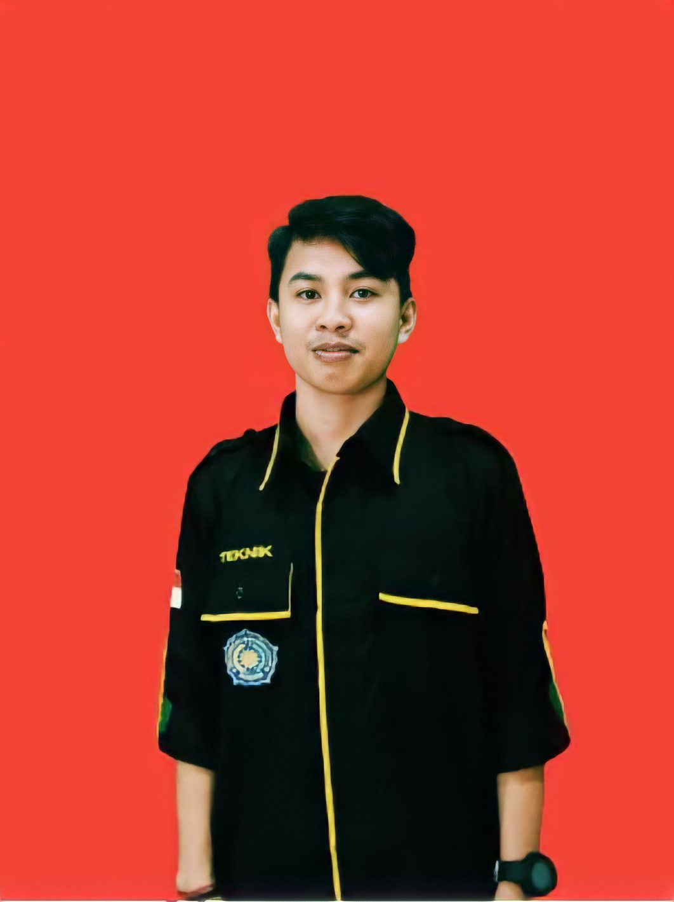

Curiculum Vitae (CV)
BIODATA PRIBADI

Nama Lengkap : syarifuddin
Jenis Kelamin : Pria
Tempat Tanggal Lahir : Sorong, 13 april 2000
Status : Mahasiswa
Tinggi Badan : 163 Cm
Berat Badan : 51 Kg
Agama : Islam
Telepon : 081346769067
Email : syariffuddin@gmail.com
RIWAYAT PENDIDIKAN
SD : sd mi yapis quba (tahun 2006-2012)
SMP : Smp muhammadiyah 2 al-amin (tahun 2012-2015)
SMA : sma negeri 2 kota sorong (tahun 2015-2018)
Perguruan Tinggi : Universitas Muhammadiyah Sorong (tahun 2018- sekarang)
KEMAMPUAN
Pengalaman Kerja : tidak ada
Skill : Memperbaiki kerusakan motor
Hobby : Futsal